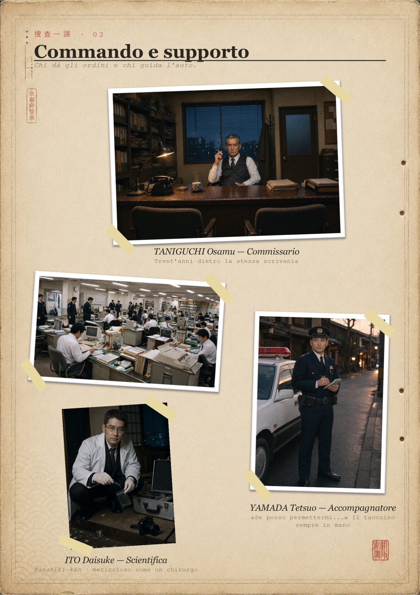
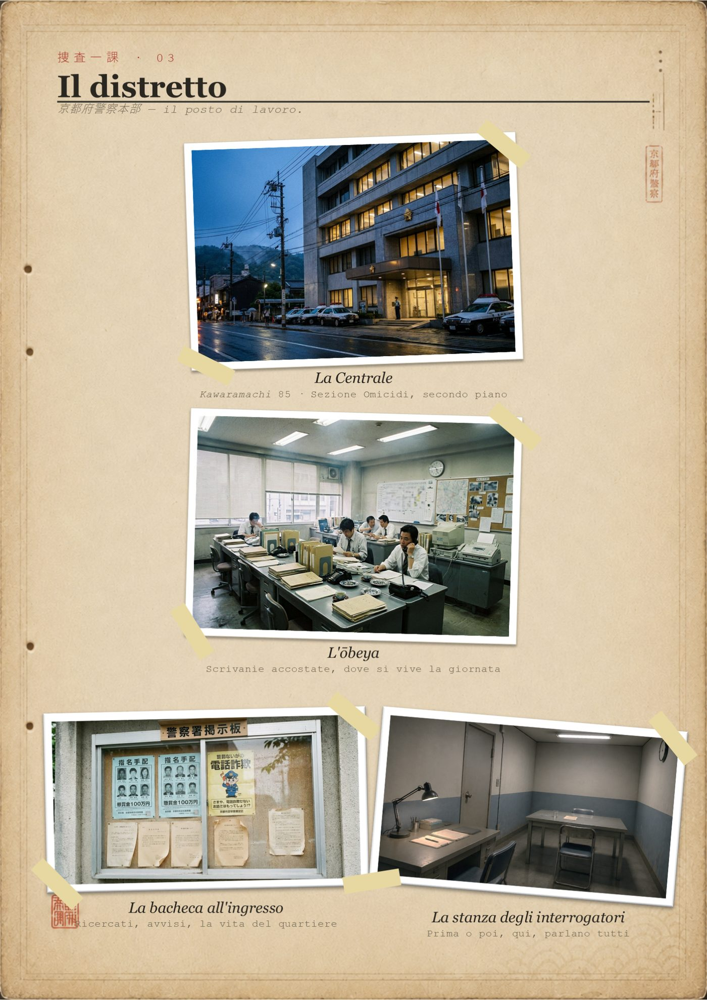
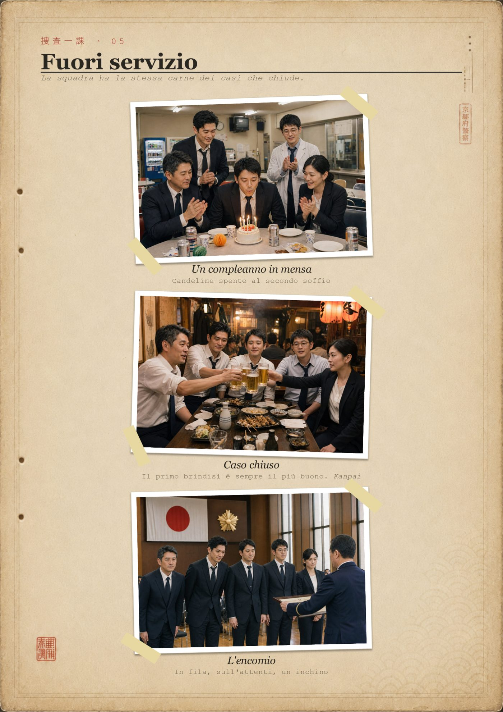
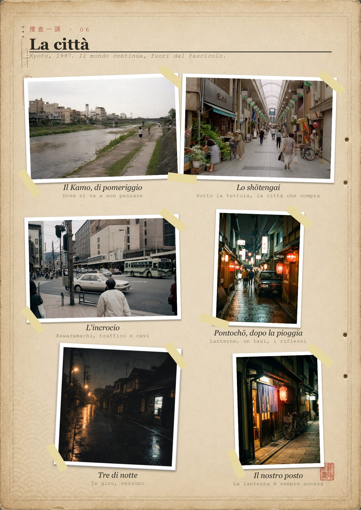
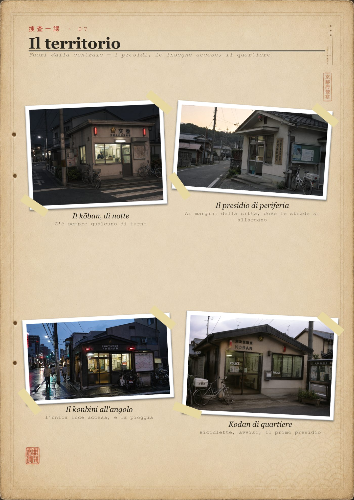
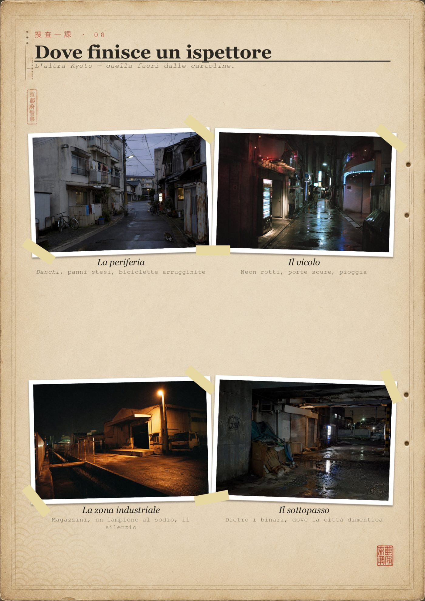
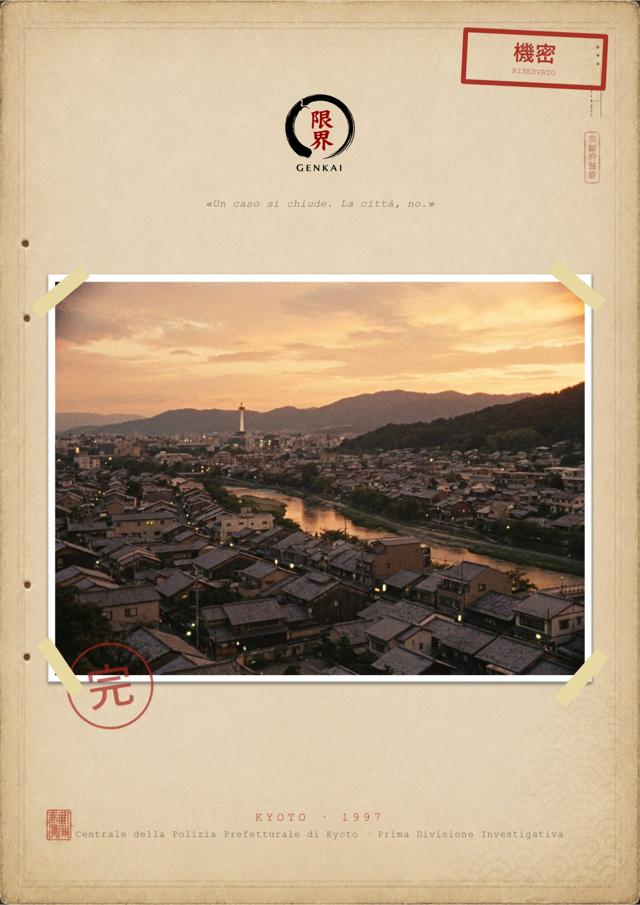

Sezione Omicidi — Polizia Prefetturale di Kyoto · 1997
L'album interno della squadra: le persone, il distretto in cui lavorano, la città che gli sta intorno. È il materiale che si mette in mano ai giocatori la prima sera.







Questi sono i cinque investigatori pronti da giocare. Puoi usarli così come sono — oppure costruirti il tuo.